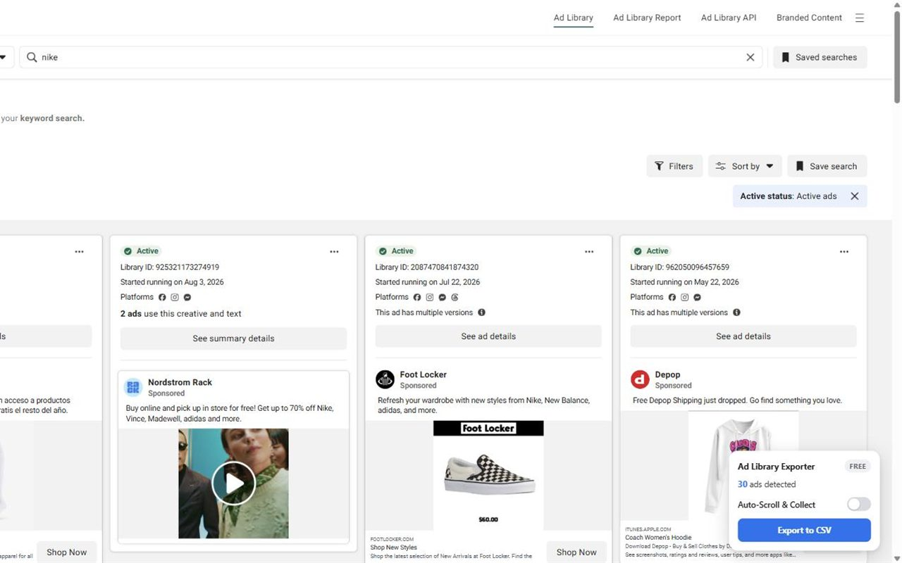
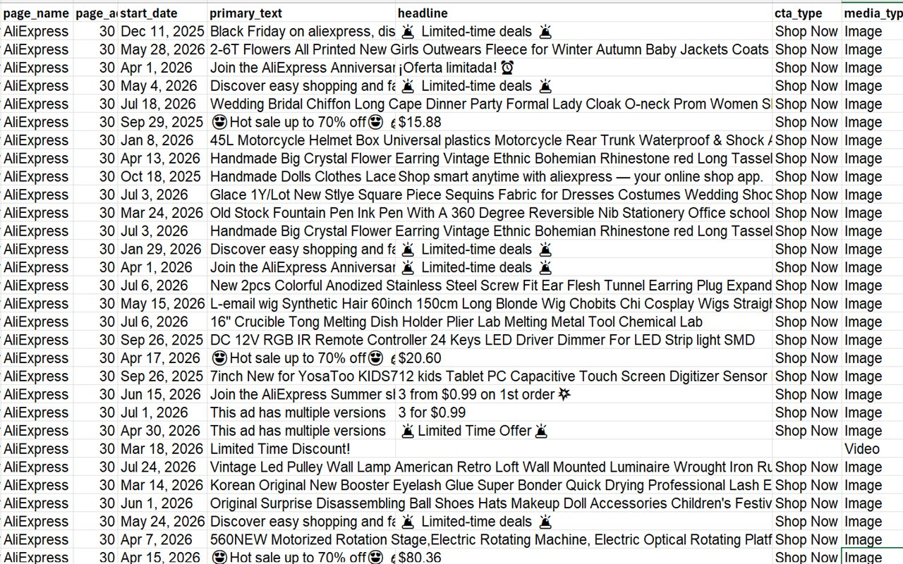

How to export the Facebook Ad Library to CSV
Meta's Ad Library is great for researching competitors' ads, but there's no download button. The free Facebook & Meta Ad Library Exporter Chrome extension turns any Ad Library search into a CSV file in one click, with no API key or account.
Made for media buyers, agencies, copywriters and marketers who want competitors' ad copy and offers in a spreadsheet.
Add to Chrome, it's freeFree plan included · No sign-up · Runs only in your browser
Step by step
- Install Facebook & Meta Ad Library Exporter from the Chrome Web Store. Free, no account.
- Open the Meta Ad Library and search for a brand or keyword.
- A small panel appears in the corner showing how many ads it has detected.
- Click Export to CSV. The file downloads immediately and opens in Excel or Google Sheets.


What's in the spreadsheet
- Ad ID and a permanent link to each ad
- Page name
- Primary text (ad copy) and headline
- CTA button (Shop Now, Learn More, Sign Up…)
- Start date and media type (image, video, carousel)
- Landing page URL, without Facebook's redirect (Pro)
Files are standard CSV with UTF-8 encoding, so they open cleanly in Excel, Google Sheets and Numbers.
Free vs. Pro
Questions
Can you download data from the Facebook Ad Library?
Not from Meta directly, apart from its API for political ads. This extension exports what you see on the Ad Library page into a CSV.
Is it free?
Yes. The first 15 rows of every export are free. Pro removes the limit.
Do I need a Facebook account or API key?
No. It only reads the public Ad Library page you're viewing.
Does it work in other languages?
For now it works when the Ad Library page is displayed in English.
Get Facebook & Meta Ad Library Exporter to CSV